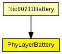
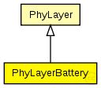

This documentation is released under the Creative Commons license
This documentation is released under the Creative Commons licenseC++ definition: click here
Physical layer module which knows how to initialize the Deciders and AnalogueModels from the modules directory. See the classes documentation for details.
The following diagram shows usage relationships between types. Unresolved types are missing from the diagram. Click here to see the full picture.
The following diagram shows inheritance relationships for this type. Unresolved types are missing from the diagram. Click here to see the full picture.
| PhyLayer (simple module) |
Physical layer module which knows how to initialize the Deciders and AnalogueModels from the modules directory. See the classes documentation for details. |
If a module type shows up more than once, that means it has been defined in more than one NED file.
| Nic80211Battery (compound module) | (no description) |
| Name | Type | Default value | Description |
|---|---|---|---|
| coreDebug | bool | ||
| headerLength | int | 0 |
defines the length of the phy header (/preamble) |
| usePropagationDelay | bool |
Should transmission delay be simulated? |
|
| thermalNoise | double |
the strength of the thermal noise [dBm] |
|
| useThermalNoise | bool |
should thermal noise be considered? |
|
| analogueModels | xml |
Specification of the analogue models to use and their parameters |
|
| decider | xml |
Specification of the decider to use and its parameters |
|
| sensitivity | double |
The sensitivity of the physical layer [dBm] |
|
| maxTXPower | double |
The maximum transimission power of the physical layer [mW] |
|
| timeRXToTX | double |
switchTimes [s]: |
|
| timeRXToSleep | double | ||
| timeTXToRX | double | ||
| timeTXToSleep | double | ||
| timeSleepToRX | double | ||
| timeSleepToTX | double | ||
| initialRadioState | int |
| Name | Value | Description |
|---|---|---|
| class | PhyLayerBattery |
| Name | Direction | Size | Description |
|---|---|---|---|
| upperGateIn | input |
from the MAC layer |
|
| upperGateOut | output |
to the MAC layer |
|
| upperControlIn | input |
control from the MAC layer |
|
| upperControlOut | output |
control to the MAC layer |
|
| radioIn | input |
for sendDirect from other physical layers |
// Physical layer module which knows how to initialize the Deciders // and AnalogueModels from the modules directory. // See the classes documentation for details. simple PhyLayerBattery extends PhyLayer { parameters: @class(PhyLayerBattery); }
This documentation is released under the Creative Commons license